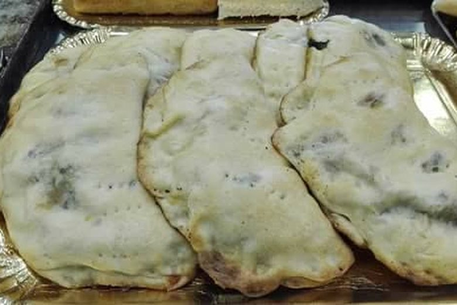

Foto 5 — tiella a fette, ripieno di polpo, 4:3
Polpo
Con olive di Gaeta e pomodoro — la più richiesta.
Due sfoglie sottili, un ripieno di mare o di orto, il forno. La facciamo dal 1922.

La tiella è la pizza ripiena di Gaeta: due dischi di pasta sottile chiusi sul bordo, cotti in teglia rotonda. Nasce come pasto dei pescatori e dei contadini, da portare in barca o nei campi, e si mangia a temperatura ambiente. Dal 2005 ha la Denominazione Comunale d'Origine (De.Co.) del Comune di Gaeta ed è tra i prodotti tradizionali del Lazio.
Con olive di Gaeta e pomodoro — la più richiesta.
Dolce, con olive e un po' di pecorino.
[[Altri ripieni del forno: scarola, alici, zucchine, baccalà… da confermare con il titolare]]
I ripieni cambiano con la stagione e con il pescato: chiedi al banco cosa c'è oggi.
Tutti i giorni di apertura [[fasce orarie della tiella]]. A fetta [[PREZZO_FETTA]], intera [[PREZZO_INTERA]] ([[diametro/peso]], [[porzioni]]).
Le tielle intere si prenotano per telefono con [[ANTICIPO]] di anticipo, anche per la spiaggia, la barca o il viaggio di ritorno.
Si mangia a temperatura ambiente e regge bene [[ORE DI CONSERVAZIONE: da confermare]]; incartata e in una borsa termica arriva a Roma o a Napoli intatta. [[Se attiva: "Su richiesta la confezioniamo sottovuoto: dura 10 giorni in frigo."]]
Le tielle intere si prenotano per telefono al 0771 460651 con [[ANTICIPO]] di anticipo, anche per la spiaggia, la barca o il viaggio di ritorno.
Aperto oggi 7:30–13:15 e 16:30–20:00
Lungomare Caboto [[CIVICO]], Gaeta, nel quartiere medievale, di fronte alla base. Parcheggio sul lungomare.